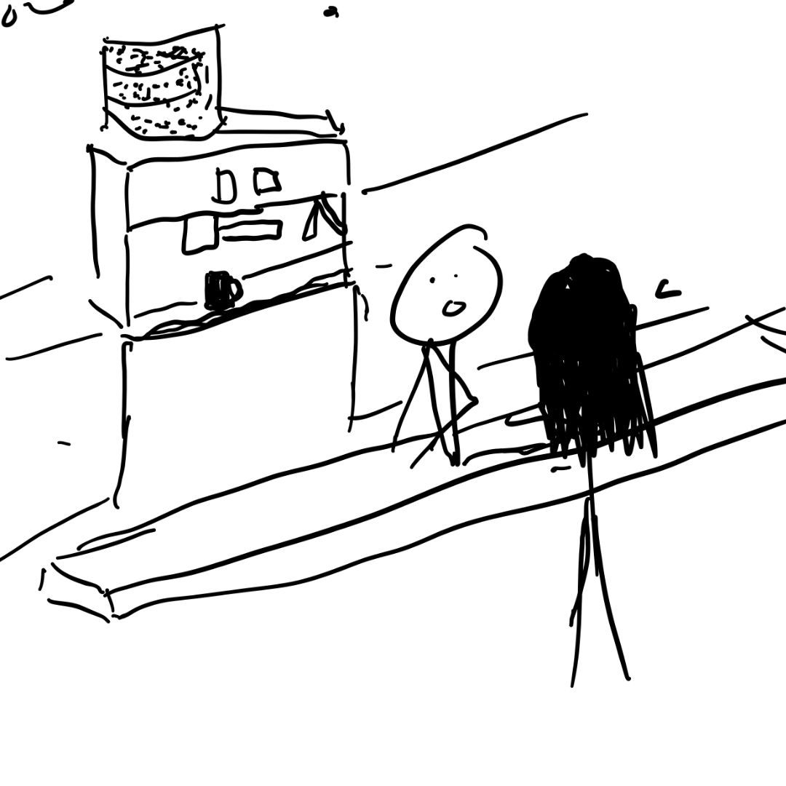

at duke i was the one and only student marketer for the academic resource center. i got to do lots of fun projects like graphic design for logos and social media posts using adobe. i also got to help create their new website on wordpress. the job was really homey with mainly just me and boss acting as though we were two mad men in the writers room trying to save the average duke student gpa like our lives depended on it. well lives maybe not, liveliehoods for sure though.
my fortune 500 stint at Anheuser-Busch. this job was all around amazing, i worked on huge brands like Budweiser, Bud Light, Michelob Ultra, Stella Artois, and Presidente to prepare market research for 5 separate music festival activation proposals. i also got to assist in executiing live experiential events for Michelob Ultra in NY NFT week and Bud Light for their PFL partnership. i fell in love with new york and the fast paced turn around time of a such a prominent company- the only thing that could've made it better is IF I HAD ACTUALLY BEEN 21 AND GOTTEN ALL THE FREE BEER THEY WERE GIVING OUT
i worked for freshco semester